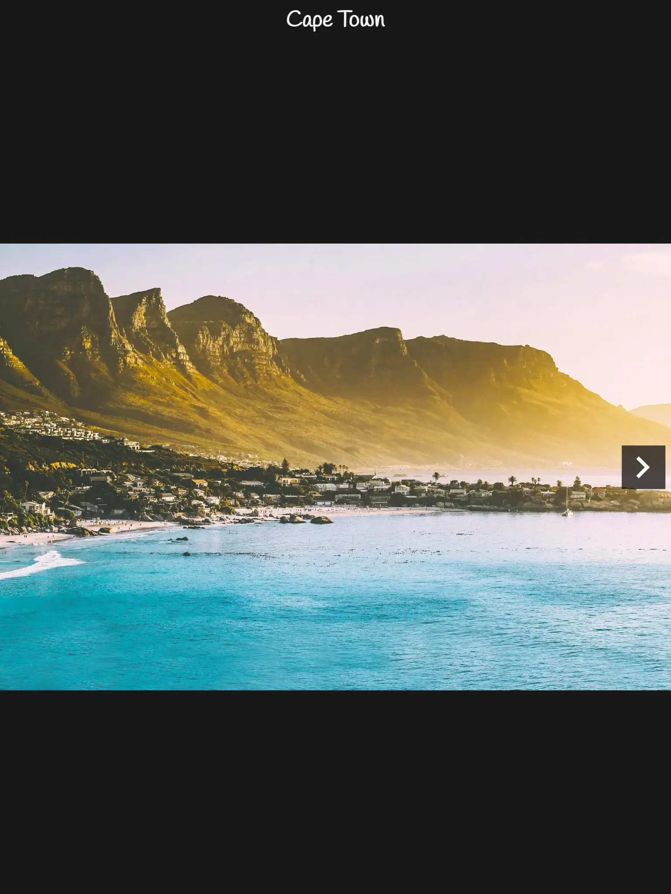

Cross-document View Transitions
A collection of demos to explore the View Transition API. The focus is on cross-document view transitions.
The Demos
Carousel
A carousel is a component that allows you to cycle through a series of content. With cross-document view transitions, we can make each page a single item in the carousel. In these examples, I will be showing a set of photographs of cities.
-
Basic: The default crossfade
transition between 2 pages. The
animation-durationis set to 2 seconds to show the effect clearly. - Shrink animation: The animation shrinks the source page out of view, and expands the target page into view.
- Skip view transition: Give the user the choice to disable view transitions through a checkbox.
- Slide animation: Slide to the right or left depending on if the next or previous link was clicked
Pagination
Pagination component that slides the page based on the direction you are going.
- MPA (Chrome 126+, Safari 18.2+)
Stack Navigator
Chat application that sports a Stack Navigator type of transitions.
- MPA (Chrome 126+, Safari 18.2+)
- MPA (with Prerender) (Chrome 126+, Safari 18.2+ (without prerendering))
Profiles
List of profiles, with overview - detail navigation
- MPA + Navigation API (Chrome 126+)
Video Zoom
Make a video element bigger while it keeps playing.
-
MPA leveraging
pageswapandpagerevealto transfer state between pages (Chrome 126+, Safari 18.2+)
Circle
A circular clip path reveal from one view/page to the other.
-
MPA + Navigation API: Transfer the state
using
pageswapandpagereveal+ add render blocking to make sure the#startingPointMarkerelement is present in the DOM (Chrome 126+, Safari TP with flags)
Off the Beaten Path
A more complex demo with multiple elements animating in sequence
-
MPA + Navigation API
leveraging
pageswapandpagerevealto transfer state between pages (Chrome 126+, Safari TP with flags)
Sortable
List of sortable items inside a scrollable container
-
Nested View Transition Groups with
view-transition-group(Chrome with#enable-experimental-web-platform-featuresflag)